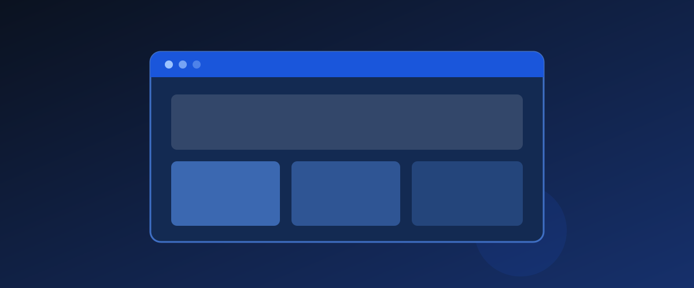

Best free website builder for a business: what “free” really costs
Free website builders genuinely exist, and for some businesses they are the right answer.
But “free” always includes at least one of three things: platform branding on your site, a subdomain instead of your own domain, or a limit that appears exactly where you need it most, usually payments.
This guide shows what each free route actually gives you and which option scales without embarrassing you in front of a customer.
The three free routes, honestly compared
| Route | What you get | The catch | Best for |
|---|---|---|---|
| Free tier of a hosted builder | Drag-and-drop editor, templates, hosting | Branding, subdomain, feature limits | Testing an idea before committing |
| Static site on a free host | Your own HTML, custom domain allowed, fast and ad-free | You handle setup and updates | Simple brochure sites on a tight budget |
| Free profiles (search, social, marketplaces) | Listings on platforms people already use | You own neither the platform nor its rules | Supplementing a site, never replacing one |
The static route deserves more attention than it usually gets. It is the only one that gives you a real custom domain, fast pages and no platform branding at no monthly cost.
The trade is that you handle the setup, or pay someone once to do it. For a simple business site with services, location, contact and hours, that trade is often excellent value.

Hidden costs to add up before choosing
- Domain. Around $10 to $20 a year. Not optional if you want to look like a real business.
- Removing platform branding. Usually the specific feature behind the first paid tier.
- Payment processing. Some free plans charge a commission or block checkout entirely. If you sell on the site, this matters more than any other line.
- Storage and bandwidth caps you only discover when your images fail to load for customers.
- Your time. DIY is free in dollars and expensive in hours.
A recommendation by situation
Validating an idea
Use a free tier or a one-page static site. The point is to find whether anyone cares, not to build an empire.
A local service business
A simple static one-pager plus a complete business listing on search and social platforms will outperform both, and cost almost nothing. Customers searching for a plumber or a salon mostly want a phone number, opening hours, location and proof you are real.
Selling online from day one
Budget for a paid e-commerce tier. Free plans rarely process payments well, and the commission can exceed the subscription cost within weeks.
The single best small investment
If you take one thing from this guide, take this: buy a custom domain.
It is the cheapest possible upgrade in perceived legitimacy. A business address that ends in a builder's name reads as a hobby, regardless of how good the site is.
Pointing a real domain at a free static host or a free tier takes minutes and removes the most visible signal that you are improvising.
Frequently asked questions
Is a subdomain bad for business?
It looks less professional, is harder to remember and you do not control it. For any customer-facing business, a custom domain is the best small investment available.
Can I start free and upgrade later?
Usually yes with hosted builders, but check the export options first. Some lock your content into a format that is painful to migrate.
Do free plans include e-commerce?
Sometimes partially, often with a commission or without full checkout. If selling is core, budget for a paid tier from the start.
Is a static site too hard for a non-technical owner?
It can be, though templates and one-off help make it manageable. If you would rather not touch it, a low-cost builder tier may be simpler overall.
What do I actually need on a small business site?
What you do, where you are, how to contact you, your hours and evidence you are legitimate. Extra pages are nice. Those five things are the business.
Sources
Each provider's own plan comparison page for current features, branding rules, payment terms and renewal pricing. General information for US readers.